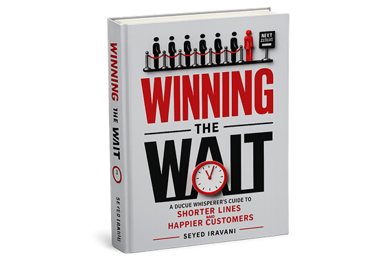

Queue Whisperer's
A good intuition is powerful. But a good intuition without a number? That's just a confident guess. Welcome to the Academy — your companion for making queues make sense.

The History of the Queue Whisperer's Academy
[Placeholder: introduce the history of the Academy and its founding mission here.] Meet [Mascot Name] — the Academy's trusty guide through every queue, bottleneck, and waiting-room mystery.